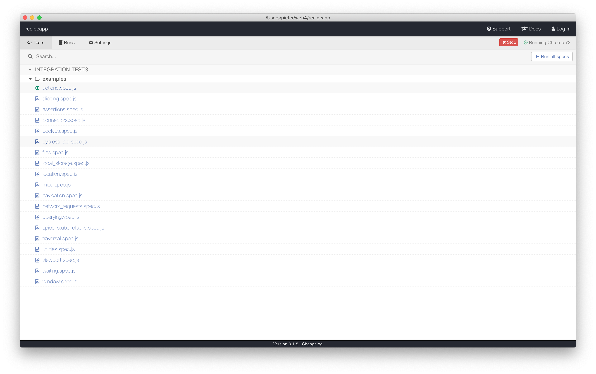

recipe app startpoint


~$ git clone https://github.com/Pieter-hogent/recipeapp.git (or git pull) ~$ cd recipeapp ~/recipeapp$ git checkout -b week6 3bfdae5 ~/recipeapp$ npm install
why write tests?
- seriously? if you don't know by now, explaining it for the umpteenth time won't help either, so we won't bother
- let's dive in immediately
angular tests
- when creating projects with ng new, and generating components, a lot of test stuff is added automatically
- unit tests using karma and jasmine
- you can start them with npm test
- they work fine, but the need for unit tests in the frontend is usually rather limited (depends on the project though, don't dismiss this)
- e2e test using protractor
- this worked great with AngularJS (1.x), but a lot is still lacking to have a good experience on 2+
- even the official documentation (protractor.angular.io) hasn't been updated since 2016, and still talks about Angular 1.x
- so we won't bother and use something else
cypress
- released oct 17
- commercial product (but open source)
- does not depend on webdriver, but runs in the browser
- advantage: easier to inspect what's running the browser
- disadvantage: harder to talk to the outside world
- fast, easy to use, batteries included
- in my experience the hardest thing about testing is getting all those lazy, entitled, developers to write tests; cypress helps tremendously here
installing cypress
~$ npm install --save-dev cypress
- installing this is installing just another npm package
- don't forget the --save-dev, you only want this included in development environments, not in production
~$ npx cypress open
- now you can run the cypress command from within your node_modules and start the environment
- (this is equivalent to ./node_modules/.bin/cypress open)
first run
- this opens a view of all the tests, a lot of example tests where added by cypress
- you can run one test by clicking it, all these tests were added inside a cypress/ folder at the root of your application
- these examples are great to show how everything's done, but we'll remove them from our recipe app for now (you can easily get them back by doing a cypress install on an empty project)

first test
cypress/integration/myfirsttest.spec.js
describe('My First Test', function() {
it('Does not do much!', function() {
expect(true).to.equal(true);
});
it('Still not doing a lot', function() {
expect(true).to.equal(false);
});
});
create the file
myfirsttest.spec.js in
cypress/integration/
individual tests are identified by
it,
describe structures multiple
tests
expect is used to really test
things
if you've ever written javascript tests, you might recognize
these
they come from mocha en
chai (included in cypress)
let's add a failing test too
in the cypress app you'll see that these tests are
automatically found and added to the listlet's try this out
first real test
cypress/integration/myfirsttest.spec.js
describe('My First Test', function() {
it('our app runs', function() {
cy.visit('http://localhost:4200');
cy.get('button').should('be.disabled');
});
});
afd0439
this works, but testing tautologies is hardly useful, let's do
a real test
start with visiting our page, using the
cy command
even though there are no asserts, this will already succeed /
fail based on the availability of your app
if you run this test, you'll see the page is really being shown
as are all XHR requests
let's check something, we've got one button ('add') and when our
page is loaded it's disabled
this works, but it's not the best way to access DOM elements on
the page
(what if you have two buttons?)
selecting elements
| selector | recommended | notes |
|---|---|---|
| cy.get('button') | Never | too generic |
| cy.get('.btn.btn-large') | Never | What if the designer changes styling? Bad |
| cy.get('#main') | Sparingly | still coupled to styling or js |
| cy.contains('Submit') | Depends | Better, but coupled to text content (which might change) |
| cy.get('[data-cy=submit]') | Good | Best, use a dedicated attribute in your html |
selection attributes
src/app/recipe/recipe-list/recipe-list.component.html
<div fxLayout="column" fxLayoutGap="2%">
<app-add-recipe (newRecipe)="addNewRecipe($event)"></app-add-recipe>
<mat-card>
<mat-form-field>
<input
matInput
(keyup)="filterRecipe$.next($event.target.value)"
...
data-cy="filterInput"
/>
</mat-form-field>
</mat-card>
<div *ngIf="(recipes$ | async) as recipes; else loadingOrError">
<div fxLayout="row wrap" ... >
<div *ngFor="let recipe of (recipes | recipeFilter: filterRecipeName)" ...>
<app-recipe [recipe]="recipe" data-cy="recipeCard"></app-recipe>
</div>
</div>
</div>
f3574f3]
let's add some attributes to help us test the application
we'll add an attribute to the filter input element
and tot he app-recipe component, inside our ngFor
test filter
cypress/interaction/myfirsttest.spec.js
describe('My First Test', function() {
it('our app runs', function() {
cy.visit('http://localhost:4200');
cy.get('[data-cy=filterInput]').type('sp');
cy.get('[data-cy=recipeCard]').should('have.length', 1);
});
});
we'll type 'sp' in our filter
that should leave us with one card (the one showing
'spaghetti')
this obviously relies on the state of our database
this test assumes we started with the default seeded database
of our backend
mock
- this depends on the application, but in general you should do at least one 'full' test for most 'paths' with nothing stubbed or mocked, to make sure everything works, and works together
- and then stub server responses to test all additional cases (there's rarely much gained by doing all cases live, but it requires a lot more database setup, and is a lot slower)
- still, depends on the application, use your own judgement
mock
cypress/interaction/myfirsttest.spec.js
it('mock recipe get', function() {
cy.server({ delay: 1000 });
cy.route({
method: 'GET',
url: 'http://localhost:4200/api/recipes',
status: 200,
response: [{ name: 'rec1', ingredients: [] },
{ name: 'rec2', ingredients: [] },{ name: 'rec3', ingredients: [] }]
});
cy.visit('http://localhost:4200/');
cy.get('[data-cy=recipeCard]').should('have.length', 3);
});
to mock requests you start by calling a
cy.server()
every request done with cy.route or
cy.request will now pass through
this server
that doesn't mean the request will not be handled by the
server
if you simply define a GET request, it will simply be passed
through the cy.server to the backend
what's the point you might wonder?
well, you can define options on your server, and e.g. delay all
requests and test if your application works correctly with slow
connections
(there are many other options, and you can define callbacks on
the cy.server as well)
but we want to mock our requests, so we add a response
then we visit the site (which will trigger a GET on
/api/recipes)
and we can check that three recipe components were constructed
as a result of three recipe objects in the servers
response
inlining data can become cumbersome (and distract from the
tests), a better way is to use fixtures
fixtures
cypress/fixtures/recipes.json
[
{
"id": 1,
"name": "Spaghetti",
"created": "2019-03-13T12:40:03.184905",
"chef": null,
"ingredients": [
{
"id": 1,
"name": "Tomatoes",
"amount": 0.75,
"unit": "liter"
},
{
"id": 2,
"name": "Minced Meat",
"amount": 500.0,
"unit": "grams"
},
{
"id": 3,
"name": "Onion",
"amount": 2.0,
"unit": null
}
]
},
{
"id": 2,
"name": "Lasagne",
"created": "2019-02-07T12:40:03.184905",
"chef": null,
"ingredients": [
{
"id": 1,
"name": "Tomatoes",
"amount": 0.75,
"unit": "liter"
},
{
"id": 2,
"name": "Minced Meat",
"amount": 500.0,
"unit": "grams"
},
{
"id": 3,
"name": "Butter",
"amount": 100,
"unit": "grams"
}
]
},
{
"id": 3,
"name": "Risotto",
"created": "2019-02-07T12:40:03.184905",
"chef": null,
"ingredients": [
{
"id": 1,
"name": "Rise",
"amount": 300,
"unit": "grams"
},
{
"id": 2,
"name": "parmesan",
"amount": 300,
"unit": "grams"
}
]
}
]
create a recipes.json file with all
the recipes we want to load in the
cypress/fixtures/ folder
fixtures
cypress/interaction/myfirsttest.spec.js
it('mock recipe get', function() {
cy.server({ delay: 1000 });
cy.route({
method: 'GET',
url: 'http://localhost:4200/api/recipes',
status: 200,
response: 'fixture:recipes.json'[{ name: 'rec1', ingredients: [] },
{ name: 'rec2', ingredients: [] },{ name: 'rec3', ingredients: [] }]
});
cy.visit('http://localhost:4200/');
cy.get('[data-cy=recipeCard]').should('have.length', 3);
});
now we simply need to change the data object to a reference to
the json file
use a string with the
fixture: prefix, and the filename,
without the path to the fixtures folder
having the url to our server hardcoded in the tests is annoying
as well (what if it moves and you have dozens of tests?)
luckily, there is a
cypress.json file at the root where
we can specify these things
so remove the url everywhere...
cypress.json
cypress.json
{
"baseUrl": "http://localhost:4200"
}
and add a baseUrl property inside
the cypress.json file at the root of
your app
this baseUrl will be prepended to every url in the cypress
tests
error case
cypress/interaction/myfirsttest.spec.js
it('on error should show error message', function() {
cy.server();
cy.route({
method: 'GET',
url: '/api/recipes',
status: 500,
response: 'ERROR'
});
cy.visit('/');
cy.get('[data-cy=appError]').should('be.visible');
});
be18b22
as a last example lets add a test to make sure our error
message is properly shown
start by adding a
data-cy='appError' attribute to the
<mat-error> in our
recipe-list.component
then define a route and make sure a server error occurs when
it's accessed
then we can make sure the error dialog is shown when the page
is visited
it's always a good idea to make sure error paths are properly
tested
they are easily overlooked, you see the 'normal' flow
constantly while developing, but rarely the weird error
cases
summary
- that covers the basics and should get you started
- there's lot more to cypress, but the official documentation is excellent, and the examples are plentiful and show most use cases
- as an exercise you can try to test the 'add recipe' form